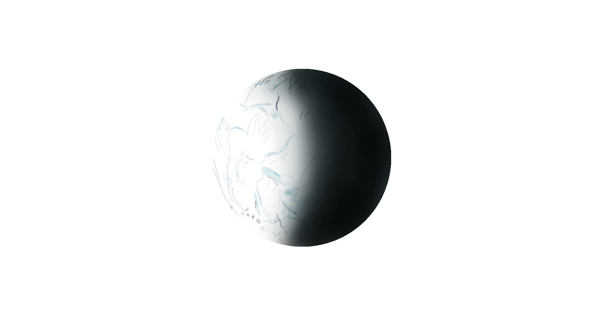

Discover Saturn's Moon, Enceladus!
Enceladus, Saturn's most fascinating moon, is an ice-world. It was discovered in 1789 by William Herschel.
This moon is completely covered in ice and has a diameter roughly the size of Arizona. It's surface is so reflective, it results in a surface temperature of roughly -330 ℉. Despite This chilling surface temperature, it is not a void of interesting activity!
Due to geothermal activity, Enceladus features geyser-like jets that shoot water vapor and ice into space! But if it's surface is ice, how can it shoot water into space? That's a wonderful question! You see, Enceladus may have an icy surface, but underneath that ice and above it's rocky core is a liquid-ocean-world. You may be asking yourself: "How could liquid water exist beneath the ice?", which is a great question. The current leading explanation by NASA is that the gravitational pull from Saturn helps causes tidal heating within the moon to keep it's ocean liquid. As a matter of fact, a lot of the ice in Saturn's E-Ring comes from these massive geysers
One of the things that interest people the most about Enceladus is that it is one of the most likely locations outside of Earth in our Solar System to contain life. In this moon, it has most of the basic ingredients for life, including:
- Carbon
- Hydrogen
- Nitrogen
- Oxygen
- Sulfur
- Phosphorus
These are all chemical ingredients that are commonly found in life. Phosphorus was the most recent addition to this list and the data was collected by the Cassini mission in 2023.